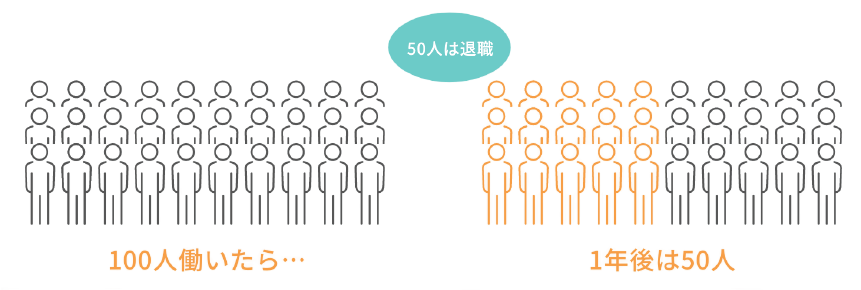

このようなことで困っていませんか？
- 休職と復職をくり返して退職している、あるいは短期での離職が続いている
- 同僚や上司など、周りとのコミュニケーションがうまくいかない
- コミュニケーションや職場、仕事などに不安や恐怖を感じやすい
- 仕事や悩みごとを相談できず、一人で抱え込んでしまう
- 人一倍疲れやすい、または疲れが取れにくい
- ストレスの対処法が分からない、うまくできない

セイコさん（40代・女性）
診断
うつ病
プロフィール：短大卒業後、事務職に就職。20代半ばで結婚。2人の子供に恵まれるも、育児と仕事の忙しさで、うつ病を発症して退職。その後も就職と退職を繰り返している。

タツオさん（20代・男性
診断
双極性障害・ASD傾向
プロフィール：小さい頃からコミュニケーションが苦手で、大学在学中に医師から発達障害の傾向があると言われている。大学卒業後、一般企業に勤めるも、上司とトラブルになったことで双極性障害を発症し、退職となった。
リエンゲージメントのコンセプト
「こころと身体の体質改善」で安定した就労を目指そう！
精神疾患を患ったことのある方は一度発症すると再発する可能性が高く、休みがちになってしまったり、仕事が続かなくなってしまうことが多いのが実情です。『障害者の就業状況等に関する調査研究』 （2017年、JEED）によると、精神障害者の1年間の職場定着率は49.3％、つまり1年のうちに半数の方が退職しているという大変厳しい数字になっています。
こういった厳しい現状を踏まえ、リエンゲージメントでは他の多くの事業所のように個人のPC作業をメインとするのではなく、心理専門スタッフによる心理・コミュニケーションの専門指導をメインに、じっくりと「こころと身体の体質改善」に取り組んでいただき、多くの支持を得ています。
「病気や症状の回復だけにとどまらず、この機会を自分らしく生きていける自分に変われるきっかけとしてほしい。」このような思いで私たちは日々利用者の皆さまと向き合っています。
リエンゲージメント流 支援の３つのポイント
POINT1個人面談で
弱点を理解
就労が長く続かない方は同じ問題を何度も繰り返す傾向にあります。そのため、心理専門スタッフとの定期的な面談を用意し、利用者一人ひとりの弱点理解・克服に役立ててもらっています。
POINT1個人面談で
弱点を理解
就労が長く続かない方は同じ問題を何度も繰り返す傾向にあります。そのため、心理専門スタッフとの定期的な面談を用意し、利用者一人ひとりの弱点理解・克服に役立ててもらっています。
POINT1個人面談で
弱点を理解
就労が長く続かない方は同じ問題を何度も繰り返す傾向にあります。そのため、心理専門スタッフとの定期的な面談を用意し、利用者一人ひとりの弱点理解・克服に役立ててもらっています。
リエンゲージメントのカリキュラム
３カテゴリの豊富なプログラムと、
充実した心理・就労スタッフの個別サポート！
画像をクリックすると、詳細な説明が表示されます。
身体の安定の為の
プログラム

生活リズムを安定させ、安定した体調を保つためのプログラムです。
心の安定の為の
プログラム
自分の感情を知り、情緒的な安定を保つためのプログラムです。
就労環境適応の為の
プログラム
職場でのルールや適切な対人関係を身につけるためのプログラムです。
真理スタッフとの
個別面談
今後の方針や弱点の
理解・克服など様々なことを
相談できる面談です。
就労スタッフの
個別サポート
自分に適した職場を考えたり、
就職活動サポートしたり、
幅広くお手伝いします。
利用手続き
就労移行サービスをご利用される場合、下記のように行政への手続き（受給者証の申請）が必要になります。詳しくはリエンゲージメントの見学相談・体験利用時にご説明します。
見学相談
体験利用
利用申請（区役所等）
通所
就職
通所初期
就労が長く続かない方は同じ問題を何度も繰り返す傾向にあります。そのため、心理専門スタッフとの定期的な面談を用意し、利用者一人ひとりの弱点理解・克服に役立ててもらっています。
通所中期
通所にも慣れ、リエンゲージメントの心理・コミュニケーションプログラムに本格的に取り組む時期です。自分の強みや長所、そして弱点を知り、克服に向けた取り組みをしていきます。
通所後期
プログラムに出る傍ら、就職活動に向けた準備を進めていきます。就労専門スタッフの個別サポートが入り、応募書類や求職活動、企業見学や実習、面接など忙しくなります。
就職後
就職後も障害者枠での雇用であれば、就労専門スタッフが企業担当者との調整に入ります。個別面談も定期的にあります。
卒業生の声
掲載許可をいただいた卒業生のアンケートの中で、「具体的変化や回復の状態について」を抜粋しています。
- T.S.さん
- 性別：男
- 年代：20代
- 勤務先業種：大手アパレル本社
通所当時は、周りの人間さえ信じられない状態で、人が恐かったです。スタッフの皆さんも敵のように感じていました。しかし、今は人を信じ、自分を信じる心が芽生えたように感じます。あるいは、素直になったのかもしれません。ただ確実に変わったのは、そのままの自分を受け入れることです。悲観的にも楽観的にもならない、そのままの自分です。
- T.S.さん
- 性別：男
- 年代：20代
- 勤務先業種：大手アパレル本社
入所したての頃は気分が安定していなかったため表情は暗く全体的にぎこちなかったと思いますが、今現在大きな変化をしてまず性格が明るくなり、気分の波もセルフコントロールできるようになりました。うつ状態がMAXの時は不安や焦燥感が強くただただ辛い状態でしたが、プログラムを習得して、メンバーさんとコミュニケーションを取り、スタッフさんとの個別面談などを通して徐々にリワークに慣れてからは日に日に「人が好き」になりそれまで否定的だった考え方もなくなり、自分自身を受け入れる一歩手前まできました。
- T.S.さん
- 性別：男
- 年代：20代
- 勤務先業種：大手アパレル本社
通所前は、クローズで働いていたが、転職を何度か繰り返し自身を失っていた。通所して気づいたこと。生活リズム・栄養・体調面を整えること、自分の考えの修正など心理面から自分を見つめることを通して、自分がどんな課題を持っているかが見えてきたこと。その課題をどう改善したかや、自分だけでなく他力をどう借りるかによって働き続けることができると分かったことは、大きな安心感に繋がりました。
- T.S.さん
- 性別：男
- 年代：20代
- 勤務先業種：大手アパレル本社
リエンゲージメントで様々な心理教育・療法、ビジネススキル・トレーニングを受け「考え方のクセを修正する」「物事の見方を少し変えてみる」「目の前のことを一つずつクリアしていく」ことの重要さに気づきました。リエンゲージメントで7ヶ月間、トレーニングを受けてきたことで、通所前よりも精神的に楽になりました。また、コミュニケーション能力の「聴く」を強化できました。今後もリエンゲージメントで学んだことを復習・実践し働くことを長く継続していきます。また、アサーションで学んだことの復習・実践には、より力を入れていきます。
- T.S.さん
- 性別：男
- 年代：20代
- 勤務先業種：大手アパレル本社
生活リズム（昼夜逆転、食事時間）が一通り落ち着いてくると「考え方」がある意味「まとも」な発想ができるようになってきました。先のことも見えすえた行動をとるなど。他所との違い・・・クリニックデイケア⇒就労移行（３障害全て）⇒就労移行（精神のみ）３箇所比較してみて、高度な経験を積んだスタッフさん、プログラム内容に当初は少し驚きました。
- T.S.さん
- 性別：男
- 年代：20代
- 勤務先業種：大手アパレル本社
通所前…精神的にあせりと無力感と絶望感でいっぱいでした。週３から始めましたが、１日プログラムに参加するのが精一杯で、しかも私はいつもきちんと笑顔で皆に優しくちゃんとしなきゃいけないという気持ちが強くてガマンしすぎて泣いて相談室に良く飛び込みました… 今は週５通うことができて生活リズムも整いあるていどいい加減にいられるようになりました＾＾
まずはオンラインでの無料相談をご利用ください
リエンゲージメントではオンラインでの無料相談を随時受け付けています（要予約）。疑問点や気になる点を担当者にご相談ください。なお、オンライン相談ではZoomアプリを使用するため、PCまたはタブレット端末、スマートフォン等の通信できる機器が必要になります。また、事業所に通所してのご相談も承っています。
見学相談〜利用申請までの流れ

まずは無料の個別見学相談で担当者とご相談ください。
個別見学相談のご予約はオンラインまたはお電話で受け付けております。
無料体験も用意しています！
見学相談の後は、最大5日間の無料体験が利用できます。まだご利用を迷っている方も、体験利用をした後にご利用の判断ができるので安心です。